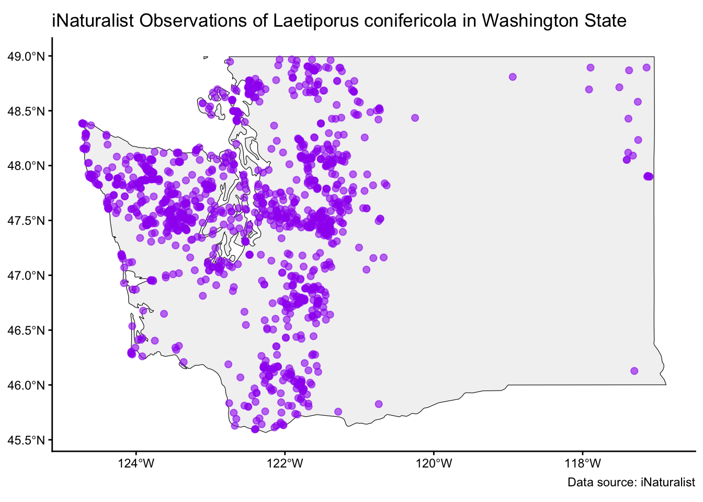
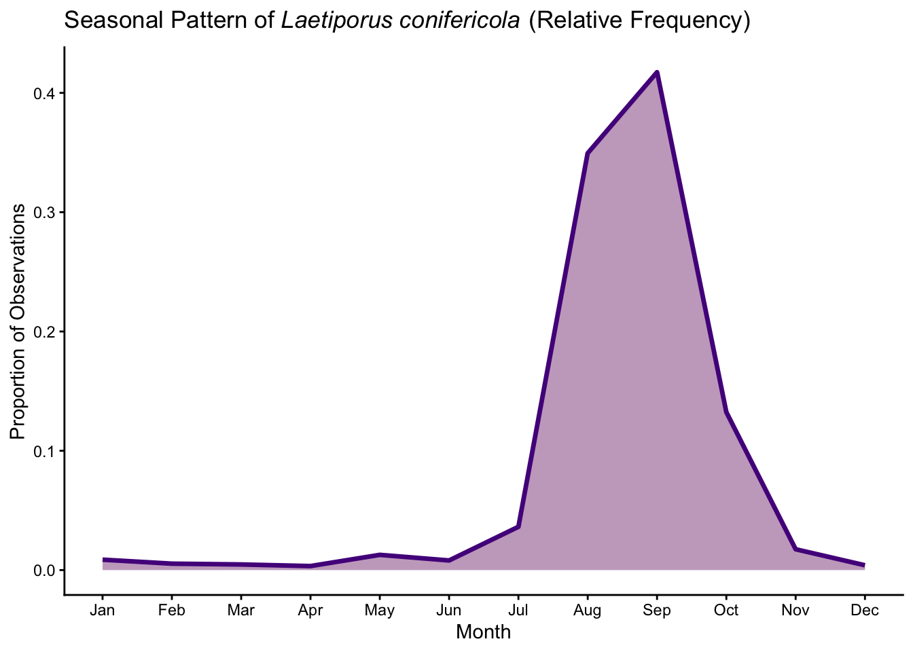

Laetiporus conifericola
Date: October 13, 2025
1. Taxonomy & Nomenclature
- Scientific Name (current): Laetiporus conifericola
- Synonyms / Former Names: Formerly included in Laetiporus sulphureus
- Common Name(s): Conifer Chicken of the Woods
- Taxonomic Authority / Citation: Burdsall, H.H.; Banik, M.T. 2001. The genus Laetiporus in North America. Harvard Papers in Botany. 6:43-55
- Higher Classification (Kingdom / Phylum / Class / Order / Family): Fungi / Basidiomycota / Agaricomycetes / Polyporales / Laetiporaceae
2. Morphology & Identification
(Burdsall and Banik)
- Fruiting Body Description (size, shape, color, texture) : Laetiporus conifericola forms large shelving polypore mushrooms. The upper surface of the fruiting body is orange, though occasionally tinted pink, and the lower, pored surface is yellow. The mushrooms are fleshy when young, becoming chalky and crumbly with age
- Cap / Pileus Characteristics: The pileus is orange to salmon on the upper surface and yellow below. When young the surface is smooth, developing wrinkles with age.
- Gills / Pores / Spines / Teeth / Etc.: The pores are yellow, 1-5 mm long, and circular to angular with age. They are arranged decurrently to the stipe
- Stipe / Stem / Attachment / Ring / Volva / Base: The stipe is wide and attached laterally when present, but some fruiting bodies are sessile, without a stipe
- Spore Print Color: White spore print
- Microscopic Features (if available) (spore size & shape, cystidia, etc.): The spores are smooth, broadly ovoid, 6.5-8.0 x 4.0-5.0 µm, and hyaline. Like other Laetiporus spp., cystidia are absent and the basidia are pear-shaped with 4 basidiospores.
- Other Diagnostic Characters (odor, bruising reactions, latex, color change, etc.): L. conifericola only occurs on conifers, both living and dead (Burdsall and Banik).
- Similar Species / Potential Confusions: This species is diagnostically found on conifers. The only other Laetiporus sp. found in Washington state is L. gilbertsonii, which occurs only on hardwoods (i.e., Quercus spp.)
3. Distribution & Habitat in Washington
- Range (counties or regions): Largely present in the Western Cascades. Some notable counties include King County, Clark County, Grays Harbor County, Kitsap County, Mason County, Yakima county, and Snohomish County. These areas are primarily within the Douglas fir and hemlock zones (both interior and exterior zones) in Washington state, with many observations within Sitka Spruce zones.
- Geographic Distribution in WA: The Conifer Chicken of the woods is primarily concentrated in the areas West of the Cascades, mirroring the regional zones where coniferous trees tend to thrive such as firs, pines, Douglas firs, spruces, and hemlocks. There are a few outliers to this pattern, notably with a few hotspots along the coast of Washington and at the far East of the state. These are likely areas where environmental conditions are suitable for some interior host conifers to thrive allowing the fungi to fruit despite lying outside their typical growing regions.
- Elevation Range: Laetiprous conifericola primarily lies within low - mid elevation ranges across the state
- Habitat Types / Substrate Preferences: Massive preference/requirement for conifer hosts, living or dead
- Host Associations (if applicable): Parasitic (can cause brown rot in conifers) and saprophytic depending on living or dead host
4. Seasonality & Phenology
- Months of Fruiting in WA: Most notable fruiting during August and September
- Seasonal Notes (peak times, moisture dependence, etc.): This species typically fruits during late summers to fall, but looking at the historic data charts on iNaturalist it appears that the quantity of observations has been steadily increasing in recent years. The pattern of fruiting implies to me that the mushrooms require moisture and some relative level of warmth to fruit along with a response from the species to shifting average seasonal temperatures, but this could be explained by increased observation/awareness.

5. Ecology & Role
- Ecological Function (saprotroph, mycorrhizal, parasite, etc.): Saprotroph and parasite of mature conifers in the West.
- Substrate / Decomposition Role: Saprotroph and parasite of mature or deceased coniferous trees, commonly associated with Douglas-fir (Pseudotsuga menziesii) and Sitka spruce (Picea sitchensis) (Beaty Biodiversity Museum). Known to cause brown rot decay in the heartwood of host trees via degradation of both cellulose and hemicellulose (Benitez et al.).
- Interactions (plants, animals, other fungi, pathogens): Exclusively live on, parasitise, and break down conifer trees. Additionally, brown rot and decomposition also have the potential to increase habitat complexity by creating cavities and by leaving behind water-retaining debris, which can improve soil quality (Benitez et al).
- Environmental Sensitivity / Indicators: Little information is available regarding the environmental sensitivity of Laetiporus conifericola, though the need for specialized substrate may increase its vulnerability due to habitat loss. Shifts in recorded seasonality in recent years may indicate potential sensitivities to alteration in local weather patterns as a biproduct of climate change, but could also be due to a confounding factor such as increased observation.
6. Conservation, Abundance & Threats
- Abundance / Rarity in WA: Fairly common in Washington, particularly in the west, in young and mature conifer stands.
- Conservation Status (state, federal, red list): Generally considered to be not of concern, though little data is available regarding conservation status throughout its range (Jones). It is reported that in Alberta, populations are considered to be vulnerable (NatureServe)
- Threats / Pressures: Threats not well documented. Changing ecosystem composition, including deforestation and drought, may negatively impact their range, particularly in the interior reaches of their range.
- Management or Monitoring Notes: Presence may require management, particularly in urban environments. If found on a tree or fixture (eg, utility posts), a professional may need to be connected to assess potential risk or remove it (Benitez et al).
7. Use / Ethnobiology / Toxicology
- Edibility / Toxicity: Generally edible when eaten young. Proceed with caution.
- Traditional / Cultural Uses: Members of the genus Laetiporus, commonly referred to as chicken of the woods or sulphur shelf, are renowned for their taste and are often used as a meat substitute.
- Medicinal / Bioactive Compounds: A preliminary review of 80 bioactive metabolites may suggest that the genus Laetiporus could have biosynthetic potential. These compounds exhibit useful properties, including antioxidant, antimicrobial, and even anticancer activities, but more medical research is needed (Duan et al).
- Cautions / Warnings: While commonly considered edible, it has been reported that some individuals report gastrointestinal discomfort or other adverse effects from ingestion (Beaty Biodiversity Museum).
8. References / Further Reading
Ahkâm. (n.d.). Cute cartoon chicken png transparent background, free download #40299 - Freeiconspng. freeiconspng.com. https://www.freeiconspng.com/img/40299
Beaty Biodiversity Museum. “Laetiporus Conifericola – Mushrooms Up! Edible and Poisonous Species of Coastal BC and the Pacific Northwest.” Explore Beaty Museum, https://explore.beatymuseum.ubc.ca/mushroomsup/L_conifericola.html. Accessed 23 Oct. 2025.
Benitez, Brianna, et al. “Chicken of the Woods (Laetiporus Sulphureus Species complex): PP358, 10 2020”. EDIS 2020 (5). Gainesville, FL.2020 https://doi.org/10.32473/edis-pp358-2020.
Burdsall, Harold H, and Mark T Banik. “THE GENUS LAETIPORUS in NORTH AMERICA.” Harvard Papers in Botany, vol. 6, no. 1, 2001, pp. 43–55. JSTOR, www.jstor.org/stable/41761627, https://doi.org/10.2307/41761627.
Dillman L., Karen. 2023, “20230811-FS-KD-033”, Flickr, Creative Commons
Duan, Vingce, et al. “Bioactive Components of Laetiporus Species and Their Pharmacological Effects | Applied Microbiology and Biotechnology.” SpringerLink, Applied Microbiology and Biotechnology, 5 Sept. 2022, https://link.springer.com/article/10.1007/s00253-022-12149-w.
iNaturalist. (n.d.). Conifer chicken of the woods (laetiporus conifericola). iNaturalist. https://www.inaturalist.org/taxa/118057-Laetiporus-conifericola
Jones, Julie. “Laetiporus Conifericola.” Burke Herbarium Image Collection, https://burkeherbarium.org/imagecollection/taxon.php?Taxon=Laetiporus%20conifericola. Accessed 23 Oct. 2025.
NatureServe. 2018. NatureServe Network Biodiversity Location Data accessed through NatureServe Explorer [web application]. NatureServe, Arlington, Virginia. Available https://explorer.natureserve.org/. Accessed 23 Oct. 2025.
9. Images / Illustrations
- Fruiting Body Photos:
10. Other Notes & Observations
- Questions / Uncertainties: Laetiporus conifericola itself is poorly described in literature, often in favor of Laetiporus sulphureus, a variety found on hardwoods in eastern North America, or more generally the Laetiporus sulphureus species complex, which is made of many unique species (L. conifericola, L. cincinnatus, L. gilbertsonii, L. huroniensis, and L. sulphureus s.s). The species epithet of Laetiporus conifericola is derived from “conifer,” and “colo”/”colous,” to live in (referring to substrate).
- Fun facts: The type specimen of Laetiporus conifericola was collected from a naturally occurring spruce hybrid Picea × lutzii (P. sitchensis x P. glauca) on the Kenai Peninsula in Alaska.